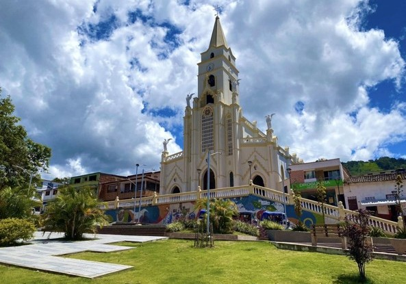
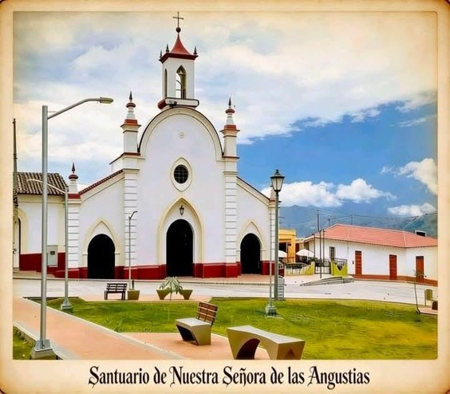
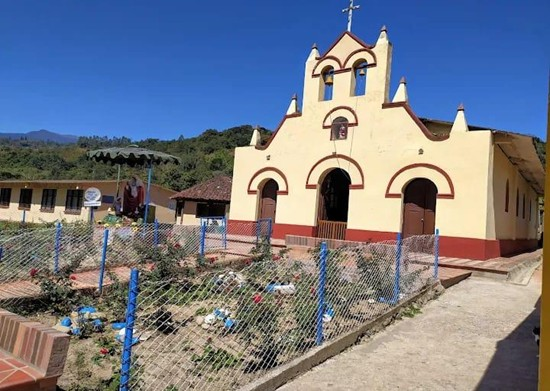

Santuarios Religiosos
Descubre los maravillosos platillos, bebidas y dulces tradicionales que el municipio
de Toledo tiene para ofrecer

Descubre los maravillosos platillos, bebidas y dulces tradicionales que el municipio
de Toledo tiene para ofrecer


